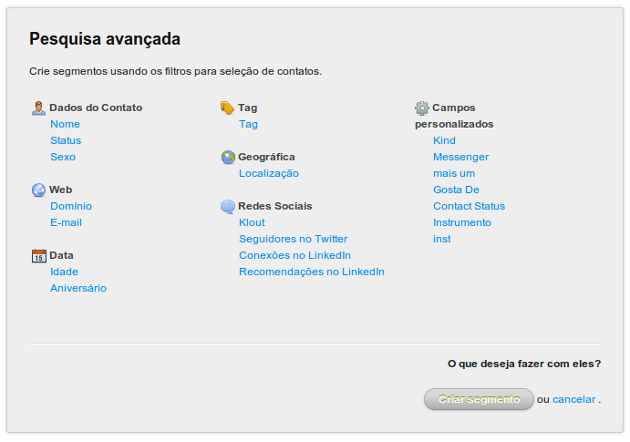
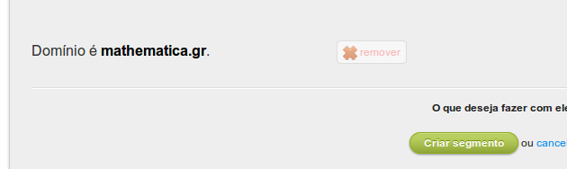
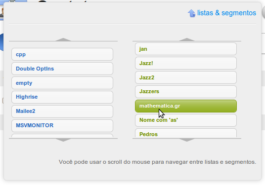

1 O que é um segmento?
Um segmento é um conjunto de contatos da sua base que obedecem certos critérios determinados. Os critérios para um segmento são determinados por você. Você pode, por exemplo, criar um segmento de todas as mulheres cujo e-mail é do Hotmail, que moram próximo de São Paulo e que torcem para o Corinthians. Uma vez criado, um segmento funciona como uma lista dinâmica. Isto é, sempre que um novo contato satisfizer os critérios, ele estará no segmento automaticamente. Isto é muito prático, pois não requer que você fique organizando os contatos em listas “rígidas”, mas apenas que mantenha os dados dos contatos o mais atualizado possível e que crie os segmentos corretos.
A segmentação é extremamente útil para criar campanhas e promoções focadas, pois é possível enviar mensagens para um determinado segmento.
O Mailee permite criar segmentos por diversos critérios apresentados abaixo, com destaque para localização geográfica, possuir certas tags que são collhidas automaticamente de redes sociais e também a influência e número de seguidores em certas redes sociais, além dos básicos, nome, sexo, idade…
2 Criando um segmento
Para criar um segmento, vá até a tela de contatos e clique em “Pesquisa avançada”, logo abaixo do campo de busca. Ao clicar neste link, abrirá o box de pesquisa avançada, com todas as opções.

Após selecionar o filtro que você deseja e adicioná-lo, aparecerá uma lista com todos os filtros escolhidos

No canto superior à direta, será informado o total de contatos atuais (ver filtros temporais abaixo) encontrados pelo filtro.
Continue adicionando filtros enquanto necessário e clique no botão “criar segmento”. Informe o nome do segmento e dê o ok.
O filtro será salvo e poderá ser visto na listagem e aplicado sempre que necessário.

3 Filtros
3.1 Por nome
O filtro por nome permite buscar contatos cujo nome seja igual, diferente, que contenha ou que não contenha uma certa sequência de caracteres. O filtro “contendo” é realizado sem levar em consideração caracteres maiúsculos e minúsculos. Por exemplo, um filtro por witt deve encontrar contatos cujo nome seja Wittgenstein ou Hewitt.
3.2 Por status
O filtro por status é útil em diversos cenários. Você pode utilizá-lo para valorizar os contatos confirmados (veja abaixo o que cada status representa), ou também para limpar contatos ainda sem acessos.
Este filtro apresenta as seguintes opções:
- Aguardando
- O contato se cadastrou pelo formulário, mas ainda não confirmou o cadastro.
- Descadastrado
- O contato solicitou descadastro.
- Inválido
- O filtro de spam do Mailee rejeitou este contato ou o último envio feito para este contato foi rejeitado em definitivo. Os motivos mais comuns para isto é que o email ou o domínio não existem ou o servidor rejeitou os emails 3 vezes seguidas.
- Em análise
- O contato foi recém cadastrado e está em análise anti-spam do Mailee.
- Soft bounce
- O último envio feito para este contato foi rejeitado temporariamente, mas ele ainda está ativo. Os motivos mais comuns para isto é caixa cheia, suspeita de spam ou erro temporário. Se isto se repetir 3 vezes o contato será invalidado.
- Desconhecido
- O contato ainda não recebeu mensagens.
- Válido
- O contato já recebeu mensagens mas ainda não acessou.
- Confirmado
- O contato já recebeu e acessou mensagens e não teve retornos.
3.3 Por sexo

O filtro por sexo permite segmentar sua base em masculino ou feminino. Para importar os contatos com esta coluna corretamente utilize os valores “M” e “F”.
3.4 Por domínio
O filtro por domínio permite segmentar sua pelos domínios dos e-mails de seus contatos, como por exemplo gmail.com, hotmail.com e yahoo.com. O filtro já traz os 8 domínios mais comuns em sua base, e você pode também escrever o domínio completo (como em meudominio.com.br) no campo em branco.
Esta segmentação é interessante quando você quer comparar resultados entre domínios, quer fazer uma promoção especial para uma empresa específica (dominiodaempresa.com.br) ou quer mandar uma mensagem diferente para um certo domínio que possua alguma restrição em relação ao formato da mensagem.
3.5 Por email
O filtro por email permite buscar contatos cujo email seja igual, diferente, que contenha ou que não contenha uma certa sequência de caracteres. O filtro “contendo” é realizado sem levar em consideração caracteres maiúsculos e minúsculos. Por exemplo, um filtro por witt deve encontrar contatos cujo email seja wittgenstein@tractatus.org ou JOHN.HEWITT@GMAIL.COM.
3.6 Por idade
O filtro por idade permite segmentar seus contatos por faixas de idade. Os valores vão de 0 a 125. O valor padrão é 20-40 mas você pode modificá-lo arrastando as pontas do slider.
3.7 Por aniversário
O filtro por aniversário permite segmentar seus contatos de três modos:
- Neste mês
- Este filtro apresentará os contatos cujos aniversários sejam no mês em que filtro está sendo aplicado. Isto significa dizer que, estando em janeiro, você verá os contatos que nasceram em janeiro, da mesma forma, em junho você verá os contatos que nasceram em junho.
- Nesta semana
- Este filtro apresentará os contatos cujos aniversários sejam nos próximos 7 dias do dia em que filtro está sendo aplicado. Isto significa dizer que, estando no dia 11 de janeiro, você verá os contatos que nasceram entre 11 e 18 de janeiro, da mesma forma, estando no dia 6 de junho, você verá os contatos que nasceram entre 6 e 13 de junho.
- Em um determinado mês
- Este filtro apresentará os contatos cujos aniversários sejam no mês especificado.
A data de aplicação de um filtro temporal não é a data de criação do filtro, mas sim qualquer data em que o filtro está sendo utilizado. Isto quer dizer que, se você entrar no Mailee no dia 17 de dezembro, e for visualizar os contatos de um segmento que filtra contatos cujos aniversários sejam “neste mês”, você verá todos os que nasceram em dezembro. Este detalhe é importante, pois se você criar uma mensagem utilizando este segmento em novembro, e programar para esta ser enviada em dezembro, a data de aplicação será a data de envio, ou seja, a mensagem irá para os aniversariantes de dezembro.
3.8 Por tag
O filtro por tag permite segmentar seus contatos pelas tags associadas à seus contatos manualmente ou pelas funcionalidades de integração com redes sociais do Mailee. O filtro já traz as 8 tags mais comuns em sua base, e você pode também escrever a tag desejada no campo em branco.
Esta segmentação é interessante para enviar mensagens focadas de acordo com as preferências do usuário. Imagine que você possui uma loja de material esportivo em geral, e vai fazer uma campanha para vender produtos associados ao Corinthians. Enviar isto para toda sua base certamente será um tiro no pé, e você terá muitos descadastros dos palmeirenses. Um filtro pela tag “corinthians” seria muito apropriado.
O Mailee é capaz de buscar automaticamente tags de seus contatos em algumas redes sociais, como o Last.fm (de música) e o Delicious (de bookmarks). Tente manter os dados de redes sociais de seus contatos atualizados, pois isto é uma ferramenta muito poderosa de segmentação.
3.9 Por localização
O filtro por localização é uma poderosa ferramenta para segmentar contatos de acordo com sua localização geográfica presumida.
A localização é estabilecida utilizando o IP fornecido pelo servidor usado pelo seu contato no último acesso que este fez à alguma mensagem sua. A localização é aproximada, não refletindo exatamente o local do acesso. Normalmente a localização inferida é baseada na cidade do acesso (todos acessos na cidade de São Paulo terão a mesma posição). Nos casos de acesso via proxy a posição inferida não será confiável.
3.10 Por Klout
O Klout é um serviço online que calcula a influência de usuários no Twitter. Sempre que você colocar o usuário do Twitter em algum contato no Mailee, o sistema irá buscar o número Klout do contato.
O filtro por Klout permite que você crie mensagens com foco em contatos influentes no Twitter, caso queira fazer campanhas para esta mídia.
3.11 Por seguidores no Twitter
Sempre que você colocar o usuário do Twitter em algum contato no Mailee, o sistema irá número de seguidores do contato.
O filtro por seguidores no Twitter permite que você crie mensagens com foco em contatos influentes no Twitter, caso queira fazer campanhas para esta mídia.
3.12 Por conexões no LinkedIn
O LinkedIn é uma rede social com foco em negócios. Sempre que você colocar o usuário do LinkedIn em algum contato no Mailee, o sistema irá buscar o número de conexões no LinkedIn do contato.
O filtro por conexões no LinkedIn permite que você crie mensagens com foco em contatos influentes no LinkedIn, caso queira fazer campanhas para esta mídia.
3.13 Por recomendações no LinkedIn
O LinkedIn é uma rede social com foco em negócios. Sempre que você colocar o usuário do LinkedIn em algum contato no Mailee, o sistema irá buscar o número de recomendações no LinkedIn do contato.
O filtro por recomendações no LinkedIn permite que você crie mensagens com foco em contatos influentes no LinkedIn, caso queira fazer campanhas para esta mídia.
3.14 Por campos personalizados
Em todo campo personalizado que você criar no Mailee, será possível aplicar filtros para segmentação.
Os filtros por campos personalizados permitem buscar contatos cujo valor do campo em questão seja igual, diferente, que contenha ou que não contenha uma certa sequência de caracteres. O filtro “contendo” é realizado sem levar em consideração caracteres maiúsculos e minúsculos. Por exemplo, se você tem um campo “Estilo musical” um filtro por rock deve encontrar contatos cujo “Estilo musical” seja Rock n’ Roll ou Hard Rock.
4 Enviando para um segmento
Uma vez com seu segmento criado, você poderá ou criar mensagens específicas para este. Ao criar uma nova campanha, basta definir o segmento após a escolha da lista.
Uma mensagem é sempre enviada para uma lista. Isto é necessário por uma série de motivos. O primeiro é a prevenir spam. Depois, o Mailee permite (e recomenda) que você coloque tags nas mensagens com informações sobre a sua empresa, como site, telefone e até mesmo endereço.
Se você já possui uma campanha e quer passar a enviar esta para o segmento, quando for criar uma nova mensagem, na tela de verificação, basta definir o segmento.